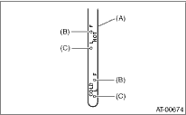

NOTE:
The level of ATF varies with fluid temperature. Pay attention to the ATF temperature when checking ATF level.
1. Raise the ATF temperature by driving a distance of 5 to 10 km (3 to 6 miles). Idle the engine to raise ATF temperature to 70 — 80°C (158 — 176°F) on the Subaru Select Monitor. 
2. Make sure the vehicle is level.
3. After slowly selecting all positions (P, R, N, D, 3, 2, 1), set the select lever in the “P” range. Idle the engine for 1 or 2 minutes, and measure the ATF level.

|
(A) |
ATF level gauge |
|
(B) |
Upper level |
|
(C) |
Lower level |
4. Make sure that ATF level is between the upper level and lower level on the HOT side.
If the ATF level is below the lower level, check for leaks in the transmission. If there are leaks, it is necessary to replace the gasket, oil seals, plugs, or repair other parts.
5. If the ATF level is below the mid level between upper and lower marks, add the recommended ATF until the fluid level is above mid level.
NOTE:
• Be careful not to exceed the upper level.
• Adding ATF up to the upper level when the transmission is cold will overfill the ATF. Do not fill beyond the upper level as overfilling can cause problems.
6. Check the ATF level after raising ATF temperature to 70 — 80°C (158 — 176°F) by running the vehicle or by idling the engine again.